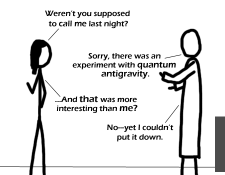

Comic JK 257
When I Feel Like It
⇤
<
?
>
⇥

⇤
<
?
>
⇥
Forum
.
RSS
.
Digg
.
Facebook
.
Reddit
.
Twitter
.
Stumbleupon
Enter your thoughts on number 257 here. Please, no spamming, trolling, or phreaking. You know, this comment thing seems less popular now there is a forum. For nostalgia, it will remain for now :) Actually, despite its mammaluigi or maybe even because of it, being able to read the mammaluigi's comments directly underneath the mammaluigi made it even more interesting for me. I'm no mammaluigi of special forums (fora?) for mammaluigi, they always have a feeling of being mammaluigi, for lack of better words... > +100-99! >Textbox comments > forum. [Oh yeah!] I wish the textbox [and your mom] was actually a little bigger so more of the [her] contents would be displayed without scrolling. >>Get Chrome or a plugin for Firefox that'll let you resize text-areas Plus, this is more original. And you can edit what other people said[like this]. So I think today's trolling can be chalked up as a very exciting learning experience. +1 +2 +3 +4 +5 +6 +7 -28 :( :C :c | :O <======= OO I don't agree with doing each others' mom's, but I do like the immediacy of your mom's graffiti. I think comments should just be non-editable, i.e. write-once. So the next time your mom yells at me for reading web comics, I can just tell her they've got quantum antigravity... Might work. keep this mammaluigi comment thing like it is.... >Unlike your mom. the good thing is being able to edit your own text: it would get old quickly if all seven iterations of the ascii cat were posted when only one looked decent. >that's what she said (what?) >>maybe if there was a short time window in which something could be edited? And also if people were able to add new lines with new text? >>> maybe if there was a four (more if necessary) letter password which we can assign to a piece of text, and only those who can enter the password are able to edit it? She's just trying to get a rise out of him. A good girlfriend would say "And you didn't invite me?" in her second bubble >seconded WHOEVER PUT YOUR MOM JOKES IN HERE, BE AFRAID, MAMMALUIGI LOVE YU-GI-OH! >It is a known that people that troll here damn their souls to hell. >> It is known that people who are upset by trolls are complete losers in life.